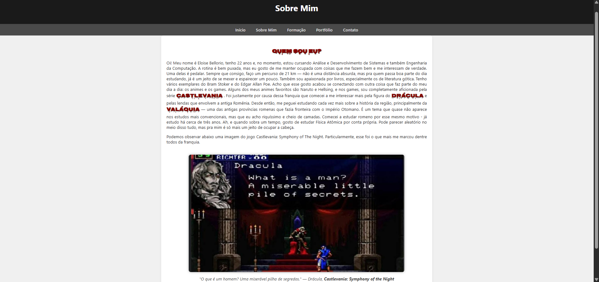
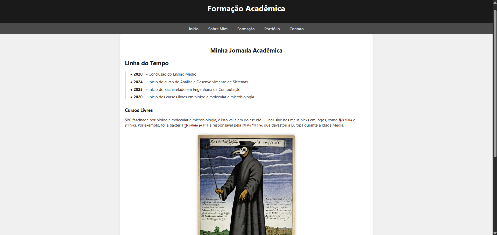

Meus Trabalhos

Este projeto foi uma proposta experimental com foco na imersão estética e narrativa inspirada em Castlevania. Trabalhei na manipulação visual, cores sombrias e referências ao universo gótico, tentando capturar a atmosfera pesada da série. Essa criação reflete não apenas meu interesse visual como também minha afinidade com narrativas densas.

Nesta arte, estilizei uma das representações medievais: o Médico da Peste em uma representação visual de uma antiga arte, explorando o contraste entre luz e trevas. Foi uma oportunidade de experimentar tipografias como a Old English e criar uma composição visual que conversa com mórbida arte medieval.